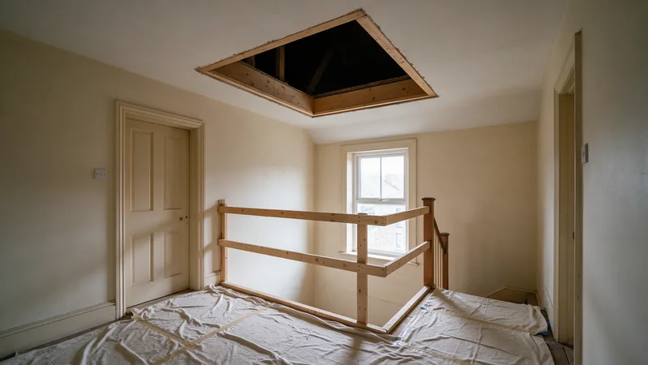

Home / Services / Loft boarding and storage
Loft boarding and storage
Loft boarding and storage.
Not a conversion. Boards on raised legs so the insulation underneath still works, a hatch you can get through, a light that comes on and a ladder that is not frightening. The job most people actually want first.
Why boards cannot go straight on the joists
Modern insulation in a loft is thicker than the joists are deep, which is deliberate: that depth is what it needs to work. Lay boards directly on the joists and the insulation under them gets squashed to the depth of the timber, and squashed insulation does very little. You have swapped a warm house for somewhere to put the Christmas decorations.
The answer is a raised system: timber or plastic legs that lift the boards clear, so the insulation stays at its full depth and keeps a bit of air above it. It costs more than a pack of boards from a shed and it is the whole point of doing the job properly.
The hatch and the ladder are most of the value
Most lofts have a hatch somebody cut in 1978 that is too small to get anything through and a set of steps you balance on. Nearly everybody who has a loft boarded says afterwards that the bigger hatch and the proper ladder made more difference than the boards.|A hatch wants to be big enough to pass a suitcase through, insulated and draught sealed on its own account, because a cold hatch in a warm ceiling is a cold spot. A fixed aluminium ladder that folds down into the opening, with a handrail at the top, turns the loft from somewhere you avoid into somewhere you use.
What a boarded loft will not do
It will not become a room later for free, and we will not pretend otherwise. Boards on legs sit on ceiling joists that are holding up a ceiling. A conversion needs a new floor that carries people and furniture and lands on the walls, and that is a different job that goes in underneath. What you spend on boarding is not wasted exactly, but it does not count towards a conversion either.
It also will not carry anything heavy. Storage means boxes, cases, decorations and the stuff that comes out twice a year. Not a home gym and not a library.
If you are thinking about a conversion within a year or two, say so and we will tell you honestly whether to wait.
 Generated photo
Generated photoGenerated for this demo. Not a photograph of a real job.
Generated photoBoards on legs above the insulation. Laid straight onto the joists they squash it flat, and squashed insulation does not insulate.
In section
What is holding your roof up.
The two things you find when you put your head through the hatch. Same roof, same span, same floor in both. All that changes is the timber in it.
Newer houses · slender timbers · a W across the space
It is not a no, it is a bigger first stage
Most houses built from about the sixties on have a roof made of thin factory made trusses, and the W of struts inside each one crosses the space you want to stand in. They cannot simply be cut out: each one is carrying the roof and the ceiling at the same time. The job is to put a new floor and new support in first, so the roof is held a different way, and then the struts come out. More work at the start, and then exactly the same room at the end.
Older houses · purlins up the slopes · clear middle
The space is already there
Older roofs are cut on site: plain rafters sitting on a purlin or two that run the length of the roof and land on the gable walls. Nothing crosses the middle, so you can walk about in there the day you first put your head through the hatch. The floor still has to be built, because ceiling joists hold up a ceiling and nothing else, but the shape of the room is sat there waiting.
Drawn in the browser rather than photographed. There are photographs of both further down the suitability page.
On the job
How this one usually goes.
- Up and have a lookWhat is up there, what the insulation is doing, what is holding the roof up, where the hatch is and whether it is in a sensible place.
- Clear and tidy firstAnything already up there moved out of the way, old loose boards up, and the insulation straightened out and topped up where it has been trodden flat.
- Lift any services clearWiring laid across the joists gets lifted and run properly rather than boarded over, and anything that needs to stay reachable gets left reachable.
- Legs and boardsThe raised legs set out and fixed, then tongue and groove boards screwed down over them, with the insulation left at full depth underneath.
- Hatch and ladderThe hatch enlarged where it makes sense, insulated and draught sealed, and a fixed folding ladder fitted with a handrail at the top.
- Light and a sweep upA proper light that switches from the landing rather than a bulb on a wander lead, and the landing left cleaner than we found it.
A sample running order for this demo. Yours depends on the house and on what the drawings come back saying.
Questions
Asked about this job.
How much of the loft should I board?
Less than people ask for. The useful part is the middle, where you can stand or at least kneel, and the eaves are rarely worth boarding because you cannot reach into them with anything.
Leaving the edges unboarded also leaves the insulation and the eaves ventilation alone, which is better for the roof. Half the footprint, in the right half, is usually the right answer.
Will it make the house colder?
Done properly, no, because the insulation stays at full depth. Done the cheap way, yes, measurably, and you will notice it in the bedroom below.
The one new cold spot a boarded loft can create is the hatch itself, which is why it gets insulated and draught sealed as part of the job rather than left as a sheet of plywood in a hole.
Can you fit a loft ladder on its own?
Yes, and it is a half day. The thing worth checking is the swing: a folding ladder needs floor space on the landing to come down into, and a hatch in a narrow landing sometimes needs a different type or needs moving.
If the hatch is going to be moved or enlarged, it is cheaper to do that at the same time as the boarding than to come back for it.
What if there is a water tank up there?
It stays unless the heating system is changing, and the boarding is set out around it with a proper platform and access to the valves. What we will not do is board over the top of anything that might need looking at.
If the tank is redundant, which plenty are, it can come out and that frees up the best part of the loft. That is a plumbing job rather than ours, and we will say if it looks worth asking about.
Is it worth it if I might convert later?
Tell us, and we will give you a straight answer rather than a sale. If a conversion is a couple of years off, boarding is money you will take back out, because the new floor goes in under it and the boards come up.
If a conversion is a maybe or a someday, boarding is a good small job with a real daily benefit, and it costs a fraction of what people assume. The honest version of this is that about half the people who ring us about a conversion would be better off starting here.
General trade knowledge written for this demo, not advice on your property.
Our work
Sample jobs like this.
Generated photoBoards up off the insulationDewsbury · Sample Generated photoCupboards in the low bitHolmfirth · Sample
Generated photoCupboards in the low bitHolmfirth · Sample
Generated photoThe hole in the ceilingSlaithwaite · Sample Generated photoTwo layers and an air gapKirkburton · Sample
Generated photoTwo layers and an air gapKirkburton · SampleMade up samples with generated pictures. Tap one for the detail.
Also
The other things we do.
Dormer loft conversions
A box built out of the back slope, so the ceiling goes flat and the room has a wall you can stand a wardrobe against instead of a slope you keep ducking under.
More →Rooflight conversions
The roof line left exactly as it is, with windows let into the slope. The cheapest way up there when the roof already has the height to spare, and the quickest.
More →Hip to gable conversions
For the semi or the end terrace where the roof slopes in at the side and the loft runs out to a point. The end wall gets built up square and the pointed bit becomes room.
More →Loft bedrooms with en suites
A bedroom with its own shower room, laid out so the shower and the basin sit where the ceiling is highest and the bed goes under the slope, which is the only way the room works.
More →Staircase design for lofts
Where the flight goes, which way it turns and what it takes off the floor below. Decided first, on paper, because everything else in the loft follows it.
More →Shall somebody come up and look?
Tell us the house and your postcode. Half an hour with a tape in the loft and on the landing tells us more than any photograph.